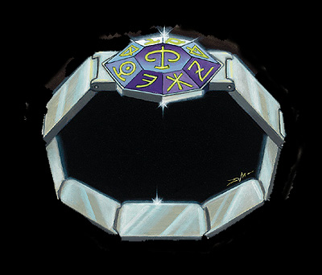

巨像铠甲
这套巨大的黑铁全身甲可以使穿戴者的体形增大一级（但不能不超过巨型）。穿戴者将获得力量+10，对心灵影响（原文为mind-effecting），毒和疾病以及其他类似的效果免疫。同时穿戴者免受致命一击，淤伤等附加伤害。能量吸取和巨创而死对穿戴者也不起作用。不同与普通铁巨像，巨像铠甲完成后是永不锈蚀的（原来是不锈钢的！）。由于它的厚实坚固，穿着它可以获得伤害减免50/+3。但是它也不是没有缺点，身穿巨像铠甲时穿戴者完全不能恢复生命点数（不论是魔法的还是普通的）。穿上或脱下巨像铠甲需要1小时。
格乌什之眼
这块石头的正中镶嵌着一块marquirs-cut black sapphire（实在不知道这个是什么东西，望高手赐教），看上去活像只眼睛。在兽人传说，这块石头其实是格乌什和精灵神柯瑞隆．拉瑞斯安战斗中丢失的眼睛变成的。而精灵则对这个故事嗤之以鼻，认为柯瑞隆．拉瑞斯安彻底摧毁了格乌什的眼睛。
不论传言如何，格乌什之眼都是件强大的魔法物品，特别是掌握在具有兽人血统的家伙手里。由兽人持用时，它会给予+6力量和魅力，兽人黑暗视觉距离加倍。当非兽人持用时，将只会力量+2并且在魅力和智慧-2。
不论使用者的种族为何，使用者挥舞的任何武器都视为精灵骨制武器。此外，当你手持格乌什之眼时，你可以对自身施加真知术。这项能力一天能被激活一次，要维持这项能力你需要一直将注意力集中在格乌什之眼上。（需每轮都需使用一个标准动作）
海克斯托铁手套
这只右手黑铁手套是海克斯托在与同父异母兄弟海若尼斯的战斗中使用过的。它被赋予了和它首任主人一样的力量和智慧。此后海克斯托铁手套就开始在海克斯托的信徒中流传，其中不乏强大的战士和高等的牧师。并且一直在寻找一个合适的傀儡来满足其的毁灭一切的强烈欲望。
手套会给予佩戴者+8点力量，并在重击时使伤害再次加倍。如果穿戴者拥有领导力专长，则会获到+4增强，但不能吸引善良或混乱的部署与随从。每天配戴者可以使用内爆术一次（施法者等级20，DC23）。
海克斯托铁手套是智能魔法物品，（智力值13，感知值18，魅力值24，自我意识值26）阵营为守序邪恶。虽然它不会说话，但能通过心灵感应的方式与佩戴者交流。它常寻找机会支配非守序邪恶的使用者，并诱使他做出邪恶的行为。（直到找到更合适的佩戴者为止）
爱恩德无敌甲
当人类还处于蒙昧时期时，一个位于远离西方的国家处于一个率先掌握神秘艺术的暴虐法师王的统治下。见到国家的这种现况，一个名叫爱恩德的谦恭牧师祈求神的怜悯，于是他被赐予一件闪亮的链甲来对抗强权。虽然爱恩德已经去世很久，但是他的链甲却留传下来。在牧师中传说它在不断寻找新的主人，以便能与它的新主人再次投身战斗中去。
爱恩德无敌甲是一件+5的链甲衫。穿戴者可以获得伤害减免10/+5，对酸，冷，电，火和音波伤害获得20点抗力加值。如果穿戴者能驱散不死生物，破邪斩，圣疗，则在相应的施法者等级上+4。举个例子：一个21级牧师施用神术时将被视为25级施法者，一个21级的圣武士在使用圣疗时，可以使用25×他的魅力调整值来治愈伤害。
贾克斯之戒 翻译：黑色圣石

这个来源不明的奇特铂金戒指上面镶着一块有着九个面的宝石，每一面上都雕刻着一个无法解读的咒语。每天日出时，这块宝石的中央都会浮现出一个不同的图案（无法明确决定作用，但据传说有一些佩戴者可以在某些时候决定哪个面起作用）。出现的图案决定了这枚戒指那一天里的具有的力量。每天开始时，玩家掷1d10决定哪个面被激活（也就起用那种力量）。
1d10 被激活的面的能力
1 佩戴者对疾病免疫
2 佩戴者不需空气
3 佩戴者获得+5自然盔甲
4 佩戴者获得底光视力
5 佩戴者获得快速医疗1
6 佩戴者能够自由飞行
7 佩戴者获得寒冷抗力30
8 佩戴者获得动自如术
9 佩戴者获得各项豁免鉴定+5
10 佩戴者可自由选定哪个面被激活
贾克斯之戒的佩戴者可以消耗巨大的精神力尝试改变已经被激活面。需要一个全回合动作并通过一个集中检定（DC50），并在检定失败时受到2d6点的淤伤。如果豁免成功，则随机决定新的起作用面。
如果贾克斯之戒被脱了下来，原佩戴者会在接下来的每分钟内受到2d6点淤伤直到重新戴上戒指或者淤伤超过他的当前生命值（而且淤伤会在减少到原佩戴者能够恢复意识后立刻开始再度增加）。
奥．爱克伯圣杯与圣符
这些神圣的物品最初是由半神奥．爱克伯在生命的最后日子里佩戴的。至今，奥．爱克伯的信徒们还在大陆上寻找圣物，希望它们可以昭显他们的信仰。（To this day, the followers of that deity search the lands to recover these relics, hoping that their recovery will unite and empower the faithful.）
奥．爱克伯圣杯是一只必须双手托起的镶珠宝的金色圣餐杯。它随时随地都放着光（相当于昼明术）并且会自动的清除任何进入其范围内的黑暗系法术。如果杯中盛满圣水（至少需要一加仑），喝下它可以治愈致命伤害或中和毒素（使用者自己决定）。这种液体不能以其他方式储存。
奥．爱克伯圣符是一个八角白金星，被拴在一条由黄金和珍珠链子上。配戴它将获得+8魅力，并可以随意使用移除目盲/耳聋，移除诅咒，移除疾病。
此外，如果圣符在圣杯的范围内并且圣杯内盛满圣水。这些水就变为神奇的复活灵药（如同神术作用）。这种功能每月只能使用一次。
邪恶或混乱者试图接触圣杯与圣符都会受到圣言术（邪恶）或律言术（混乱）伤害，如果是混乱邪恶将受到双重伤害。